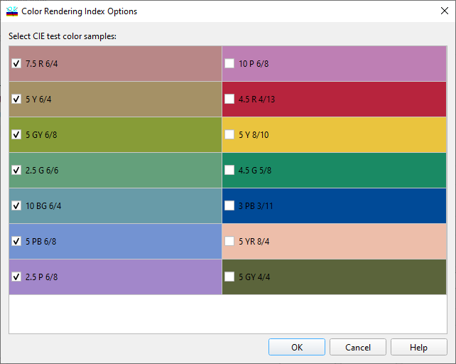

Color Rendering Index Options
Color Rendering Index Options
Navigation: OptiLayer Menu Commands > Configuration Menu > Color options >
Color Rendering Index Options
` <coloroptions.html>`__ ` <coloroptions.html>`__ ` <gd___gdd_options.html>`__

Select a subset of color samples used in the Color Rendering Index evaluation. Approximate colors of samples together with Munsell notations are shown.